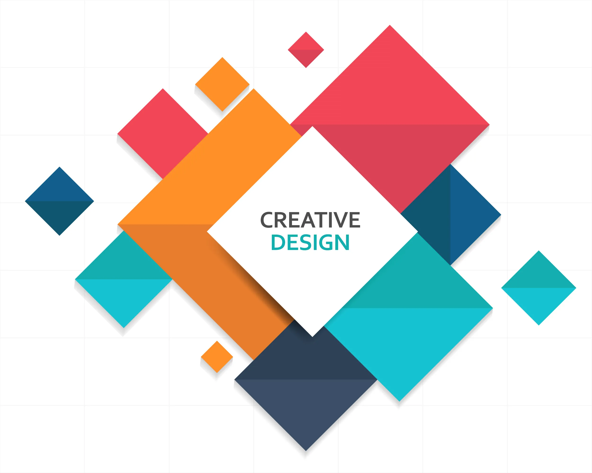

Technical

Introduction to Dynamic Web Development Server Setup HTML, CSS, JavaScript, Bootstrap PHP Basics: Expressions, Control Flow, Functions, Arrays, File Handling SQL and MySQL Basics Creating Dynamic Websites with PHP and MySQL WordPress Overview and Installation Admin Panel, Posts, Pages, Media Management Custom Post Types, Taxonomies, Themes, Plugins, Widgets Child Themes, HTML to WordPress Conversion WordPress Loop, Template Tags, Permalinks WooCommerce for e-Commerce Websites
Content marketing
Contact marketing, often referred to as "contact marketing, " is a strategic approach that combines elements of marketing and sales with the specific goal of engaging and connecting with high-value prospects. These prospects typically include CEOs, C-level executives, and other top decision-makers within target organizations. From social media to high-end websites Engaging and creative content aligned with strategy Non-technical training in content marketing WordPress blogging, SEO, lead generation Connecting with high-value prospects (CEOs, C-level executives, top decision-makers)
Creative
Creative design is the process of using imagination and artistic skills to create innovative and visually appealing solutions or products. Design principles (balance, contrast, alignment, etc.) Color theory Typography Graphic design software (e.g., Adobe Creative Suite) Sketching and drawing techniques User experience (UX) and user interface (UI) design Branding and identity design Creative problem-solving Design history and trends Project management and collaboration.gement and collaboration. tools used in creative design Tools used in creative design include: Graphic Design Software: Adobe Photoshop, Illustrator, InDesign. Prototyping Tools: Sketch, Figma, Adobe XD. 3D Design Software: Blender, AutoCAD, SketchUp. Drawing Tablets: Wacom, Huion. Color Tools: Pantone color guides, Adobe Color. Typography Tools: FontForge, Google Fonts. Image Libraries: Unsplash, Shutterstock. Mockup Tools: Mockup World, Smartmockups. Collaboration Platforms: Trello, Slack, Asana. Wireframing Tools: Balsamiq, Wireframe.cc.
Ecommerce

E-commerce is the buying and selling of goods and services over the internet. Understanding E-commerce Platforms: Learn about popular e-commerce platforms like Shopify, WooCommerce, Magento, etc., and their features. Digital Marketing: Familiarize yourself with digital marketing strategies such as SEO, SEM (PPC advertising), social media marketing, email marketing, and content marketing. User Experience (UX) and User Interface (UI) Design: Understand how to design intuitive and user-friendly interfaces that enhance the shopping experience. Payment Systems: Learn about various payment gateways, transaction security, and the integration of payment systems into e-commerce platforms. Supply Chain Management: Gain knowledge of inventory management, logistics, shipping, and handling returns in an e-commerce context. Customer Relationship Management (CRM): Understand how to build and maintain relationships with customers through effective CRM strategies and tools. Analytics and Reporting: Learn how to use analytics tools to track e-commerce performance metrics such as conversion rates, customer acquisition costs, and average order value. Legal and Regulatory Issues: Familiarize yourself with e-commerce laws, regulations, and data protection policies that may impact online businesses. Mobile Commerce (M-commerce): Understand the unique challenges and opportunities in mobile e-commerce, including responsive design and mobile payment solutions. Emerging Trends: Stay updated on current and emerging trends in e-commerce, such as AI-driven personalization, voice commerce, and omnichannel strategies.
back to top